01
Challenge & Focus
도전몰입주도성
- 방향 설정
목표가 정해지면 필요한 일을 스스로 찾아 움직입니다.
- 깊은 몰입
새로운 과제에 뛰어들어 필요한 지식을 집중해서 익힙니다.
- 새로운 시도
실패를 두려워하지 않고 새로운 방법을 찾습니다.
ROBOTICS SOFTWARE ENGINEER
로봇 제어 · 텔레오퍼레이션 · 모방학습
안 되면,
될 때까지 합니다.
텔레오퍼레이션, 로봇 데이터 수집·검증·시각화, 모방학습 학습·추론을 경험했습니다. 수집한 데이터를 실제 로봇과 엔드이펙터의 동작으로 연결하고, 장치와 소프트웨어의 연동을 직접 검증했습니다.
저를 소개합니다.
2026.09 — 장기현장실습 수기공모전 최우수상 · 한국기술교육대학교 총장상
2022.02 — 메타버스 공모전 동아리 부문 우수상 · 한국기술교육대학교 온라인평생교육원
도전 · 검증 · 학습 · 협업
도전하고, 끝까지 풀고, 배우며, 함께 완성합니다.
도전몰입주도성
목표가 정해지면 필요한 일을 스스로 찾아 움직입니다.
새로운 과제에 뛰어들어 필요한 지식을 집중해서 익힙니다.
실패를 두려워하지 않고 새로운 방법을 찾습니다.
집요함검증완결성
답을 찾을 때까지 원인을 집요하게 파고듭니다.
가설과 방법을 유연하게 바꾸며 실행 결과를 검증합니다.
끝났다고 넘기기보다 한번 더 확인하고 마무리합니다.
학습민첩성피드백적응력
낯선 환경에서도 필요한 것부터 배우며 빠르게 적응합니다.
부족한 점을 인정하고 피드백을 수용합니다.
배운 내용을 다시 확인하고, 같은 실수를 반복하지 않으려 합니다.
협업책임감문서화
팀의 방식과 분위기를 먼저 파악하고 자연스럽게 맞춰갑니다.
상대방의 관점에서 생각하여 역할과 기준을 맞춥니다.
맡은 일을 끝까지 완수하고, 다음 사람을 위해 문서로 남깁니다.
HANDS-ON EXPERIENCE
업무와 과제에서 직접 사용한 로봇과 장치입니다. 이름에 마우스를 올리거나 눌러 제품 이미지를 확인하세요.
01 / ROBOT
One-Arm Robot:
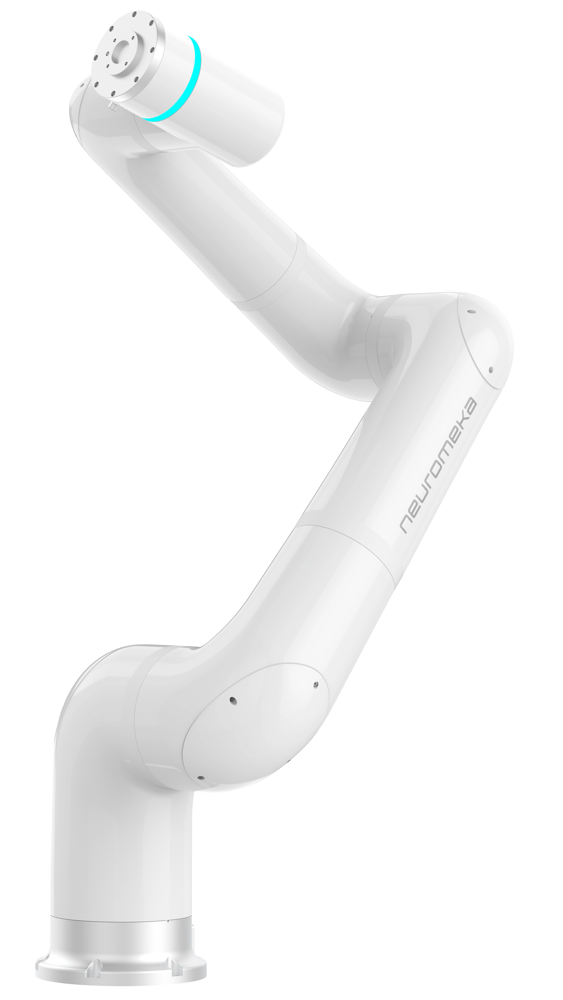
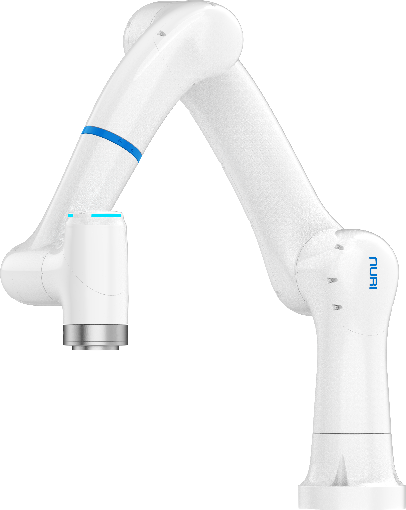
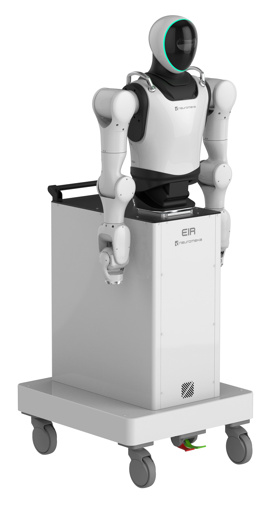
02 / INPUT DEVICE
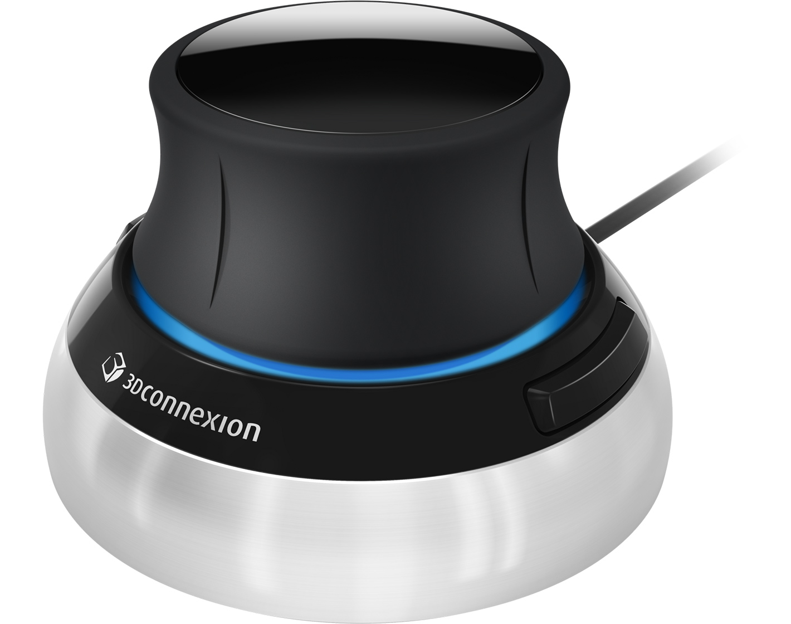
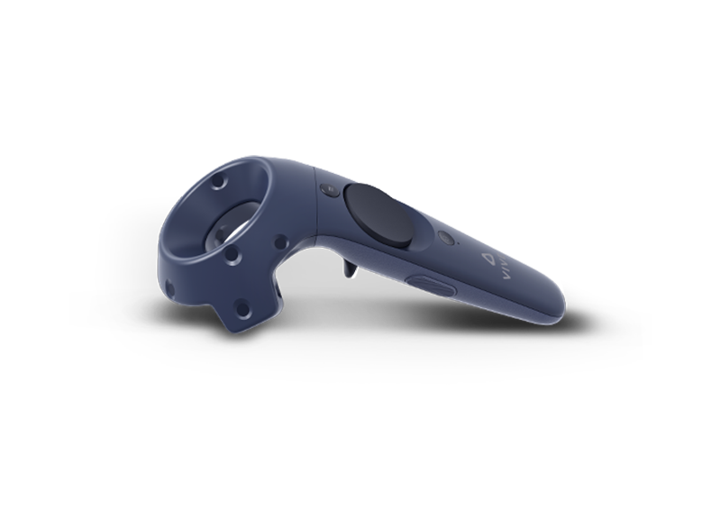
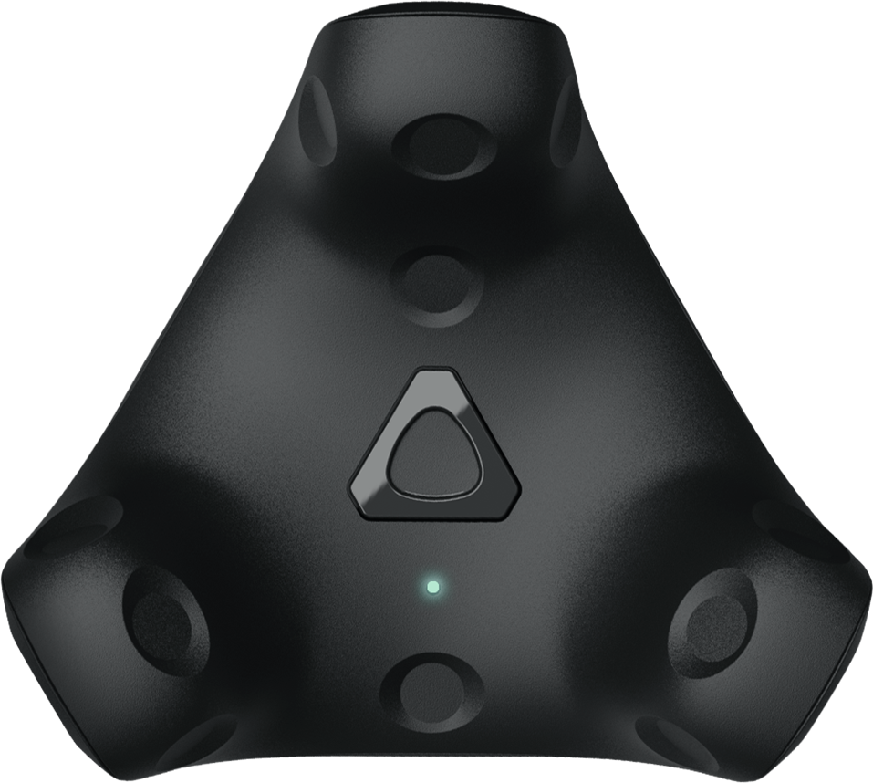
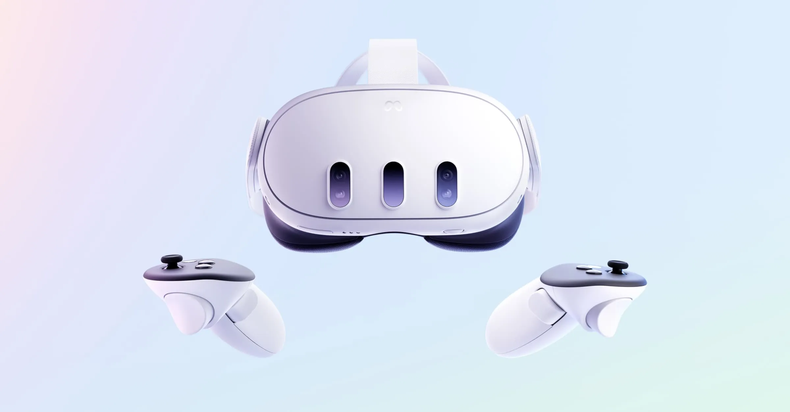
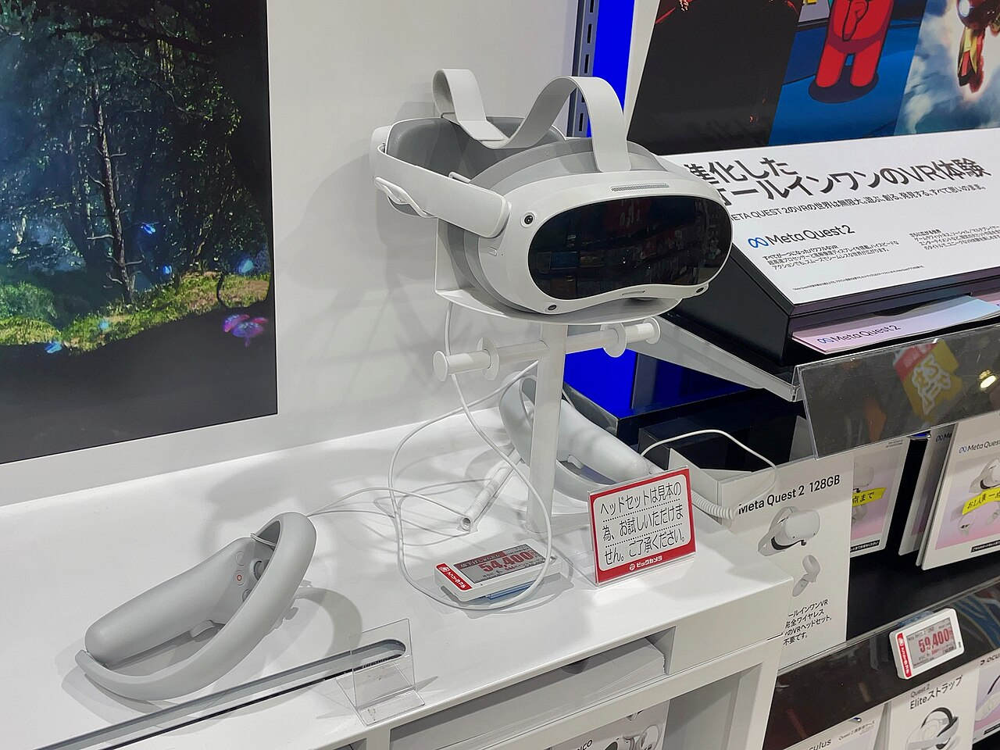
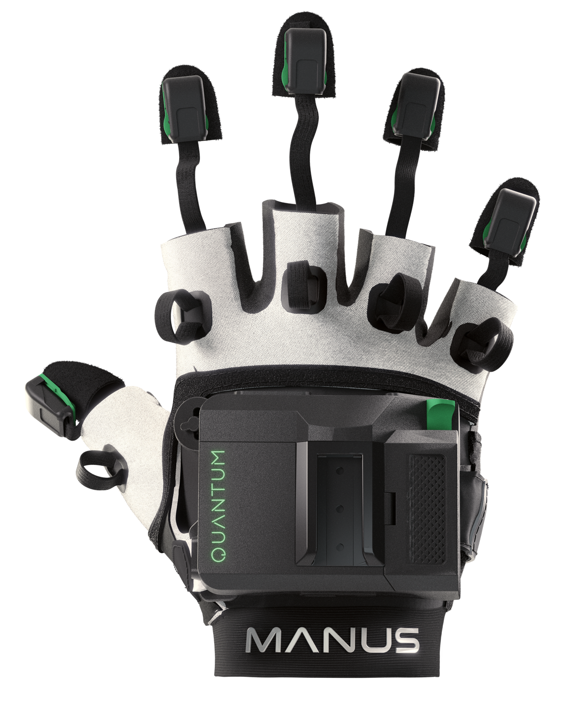
03 / END-EFFECTOR
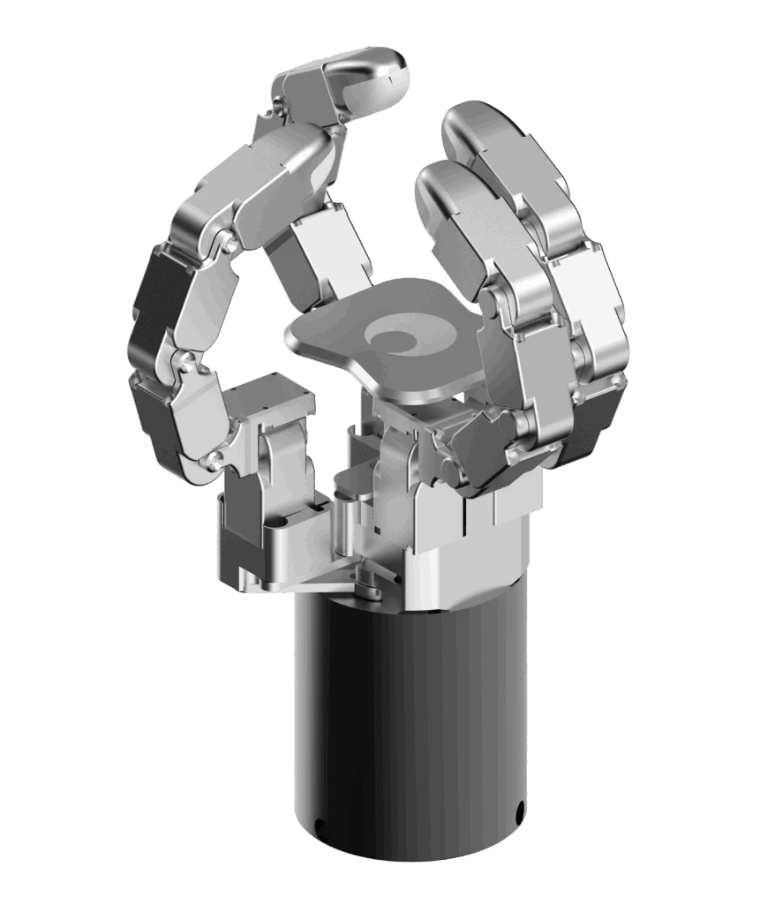
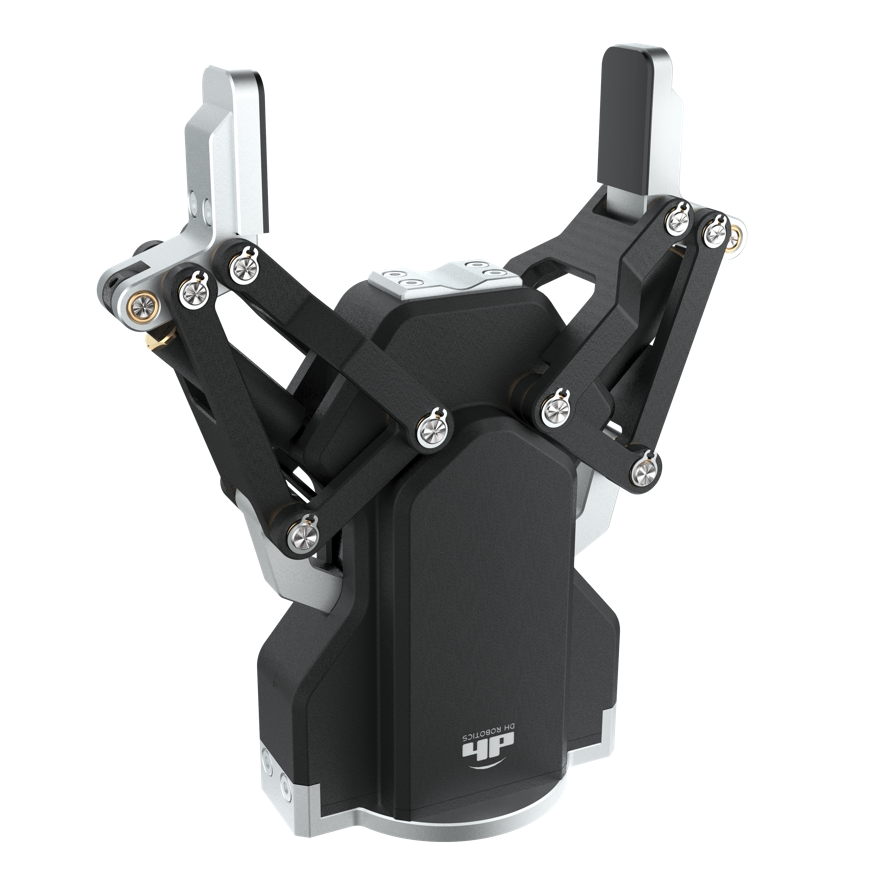
04 / CAMERA
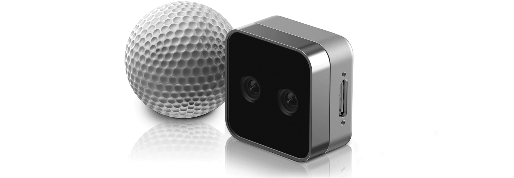
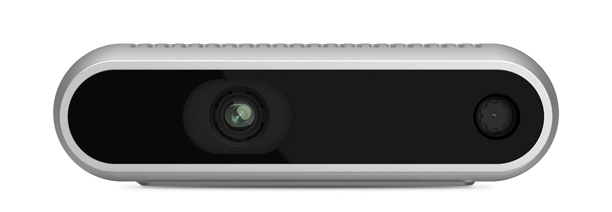
Python · Linux · Docker · Git
CONTEXT → IMPLEMENTATION → VALIDATION
AI Agent와 함께 기존 코드와 문서를 분석하고 기능을 구현합니다. 저는 실제 현상과 시스템의 제약을 설명하고, 제안된 계획의 영향 범위를 검토한 뒤, 작은 단계로 구현한 결과를 실제 장비에서 확인합니다.
현상·재현 조건·시스템 제약과 완료 기준을 먼저 설명합니다.
수정 위치와 방법, 다른 기능에 미치는 영향을 확인합니다.
기존 기능의 누락과 데이터·API 계약의 충돌을 계획에서 먼저 찾습니다.
독립된 목표와 확인 기준을 가진 작은 단위로 나눠 진행합니다.
검사 결과와 실제 장비 동작을 나눠 확인하고, 다음 수정을 정합니다.
2019 — 2026
경험을 따라, 전체의 흐름을.
시작 시점 기준 최신순입니다. 카드를 눌러 내용을 펼치고 상세 사례를 확인하세요.
전체 경험 11개
장기현장실습 경험을 정리한 수기로 최우수상을 수상했습니다.
시뮬레이션에서 사족보행 정책을 학습·실행하고, 설정과 보상 변경이 동작에 미치는 영향을 확인했습니다.
단기 교육 실습 · 검증 범위: 시뮬레이션
기존 텔레오퍼레이션·모방학습 플랫폼의 기능 개발과 검증을 수행했습니다.
회선 시험, CCTV·통신장비 운용과 RJ45·RJ11 케이블 제작을 담당했습니다. 분대장으로 병력 관리·작업 교육과 인수인계 문서 작성을 수행했습니다.
군 복무 활동 자세히 보기 ↗C·ATmega128에서 먼지·적외선·초음파 센서 입력을 이동 조건에 연결했습니다. 라인 트레이싱, 팬·LCD·부저와 이동·복귀 동작을 제어했습니다.
공기청정기 Case Study ↗동아리 부문 우수상 수상 이력입니다.
9개 대학 사례 조사와 3개 대학 간 4회 협의를 바탕으로 교류를 추진했습니다. 학생처와 협의해 추가 예산을 확보했습니다.
대외협력 활동 자세히 보기 ↗행정·교육 운영·콘텐츠 검수 등 부서별 역할을 맡았습니다. 2026.07 ~ 2026.10에는 능력개발교육원 HRD교육팀에서 자격교육 운영을 지원했습니다.
집행부 공백에서 조직 운영을 맡고 부원 교육·악보 제작, 온라인·대면 공연과 무대·음향을 운영했습니다. 전체 활동 기간 동안 정기공연 5회, 외부 행사 20회 이상, 농악대회 2회에 참여했습니다.
한소리 활동 자세히 보기 ↗2019년 3월 입학 · 2027년 2월 졸업예정
GET IN TOUCH
편하게 연락 주세요. 커피챗도 좋습니다.